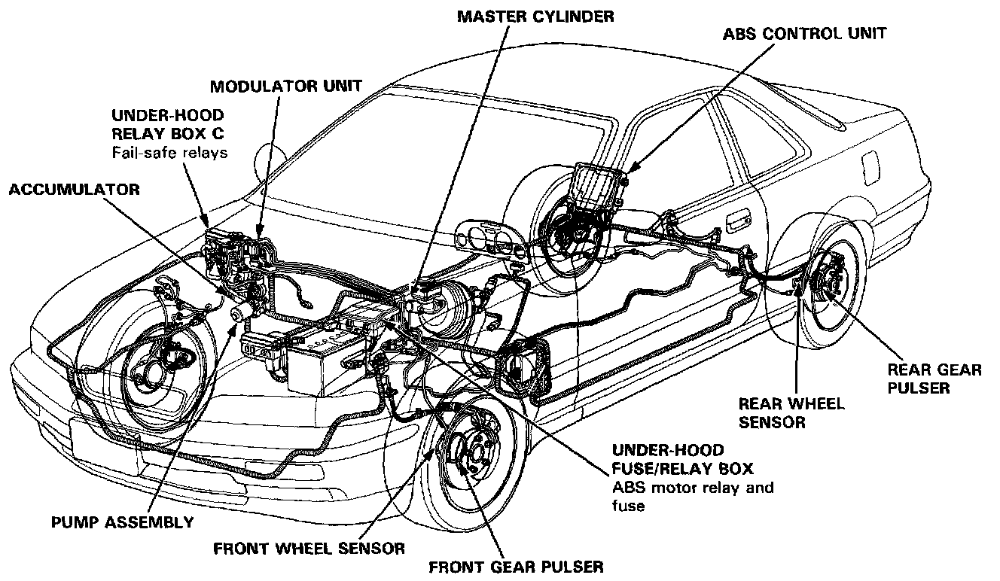

Features and Construction
Features/Construction/OperationIn a conventional brake system, if the brake pedal is depressed very hard, the wheels can lock before the vehicle comes to a stop. In such a case, the stability of the vehicle is reduced if the rear wheels are locked, and maneuverability of the vehicle is reduced if the front wheels are locked, creating an extremely unstable condition.
The Anti-lock Brake System (ABS) modulates the pressure of the brake fluid applied to each front caliper or both rear calipers thereby preventing the locking of the wheels, whenever the wheels are likely to be locked due to hard braking. It then restores normal hydraulic pressure when there is no longer any possibility of wheel locking.
Features
- Increased braking stability can be achieved regardless of changing driving conditions.
- The maneuverability of the vehicle is improved as the system prevents the front wheels from locking. When the anti-lock brake system goes into action, a kickback is felt on the brake pedal.
- The system is equipped with a self-diagnosis function. When an abnormality is detected, the ABS indicator light comes on. The location of the system's trouble can be diagnosed from the frequency of the system indicator light blinks.
- This system has individual control of the front wheels and common control ("Select Low") for the rear wheels, "Select Low" means that the rear wheel that would lock first (the one with the lowest resistance to lock-up) determines anti-lock brake system activation for both rear wheels.
- The system has a fail-safe function that allows normal braking if there's a problem with the anti-lock brake system.

Construction
In addition to the conventional braking system, the anti-lock brake system consists of: gear pulsers attached to the rotating part of individual wheels; wheel sensors, which generate pulse signals corresponding to the revolution of the gear pulsers; ABS control unit, which controls the working of the anti-lock brake system by performing calculations based on the signals from the individual wheel sensors and the individual switches; modulator unit, which adjusts the hydraulic pressure applied to each caliper on the basis of the signals received from the ABS control unit; an accumulator, in which high-pressure brake fluid is stored, a pressure switch, which detects the pressure in the accumulator and transmits signals to the ABS control unit; a pump assembly, which supplies the high-pressure working fluid to the accumulator by means of a pump; a motor relay for driving the pump; fail-safe relays, which cut off the solenoid valve ground circuit when the fail-safe device is at work; and, an ABS indicator light.